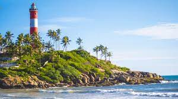
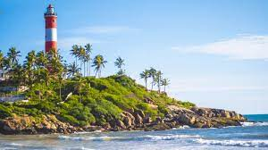
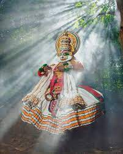
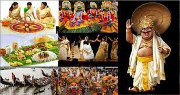
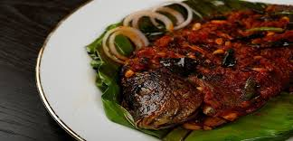
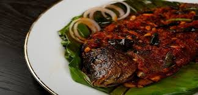

About Kerala
Kerala, located in the southern part of India, is renowned for its palm-lined beaches, backwaters, and network of canals. Known as "God's Own Country", Kerala is a destination where nature, culture, and tradition meet in harmony.

Kerala, located in the southern part of India, is renowned for its palm-lined beaches, backwaters, and network of canals. Known as "God's Own Country", Kerala is a destination where nature, culture, and tradition meet in harmony.

 


Kerala is rich in culture and traditions. The state is famous for its classical dance forms like Kathakali and Mohiniyattam, traditional music, and vibrant festivals such as Onam and Vishu. The cuisine of Kerala, known for its use of coconut, spices, and seafood, is a culinary delight.
  

For more information, visit our website or contact us at:
Email: https://www.keralatourismplace.com
Phone: +91 12345 67890